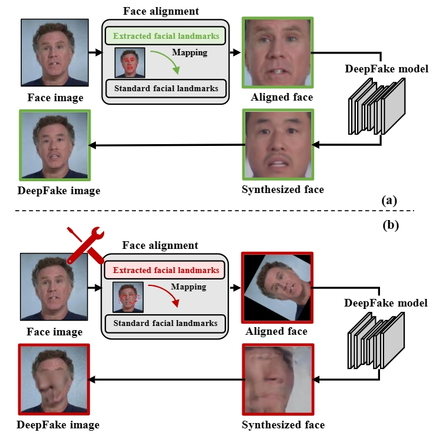

LandmarkBreaker: A Proactive Method to Obstruct DeepFakes via Disrupting Facial Landmark Extraction
简介：近年来深度神经网络（DNN）的发展极大地增加了合成人脸的逼真程度，其中最引人注目的例子是DeepFakes。随着社交媒体数量的增加，DeepFake视频在互联网上迅速传播，对社会造成广泛的负面影响。不同于传统的DeepFake检测方法，本文提出了一种主动防御方法（LandmarkBreaker），该方法首次通过干扰人脸关键点提取来阻碍DeepFake视频生成。具体而言，本文通过迭代地优化损失函数来设计对抗扰动。此外，本文还提出了LandmarkBreaker++，它可以通过梯度剪裁和面部掩蔽策略进一步降低对抗性扰动的可感知性。本文通过在三种常用人脸关键点提取器上进行了方法验证，并通过Celeb-DF数据集研究了防御有效性。实验结果表明该方法能够有效阻止DeepFake视频的生成。

作者: Yuezun Li, Pu Sun, Honggang Qi, Siwei Lyu.
期刊名称: Computer Vision and Image Understanding. CCF B. 影响因子4.5.
© AI Security Group (AISec) @ OUC